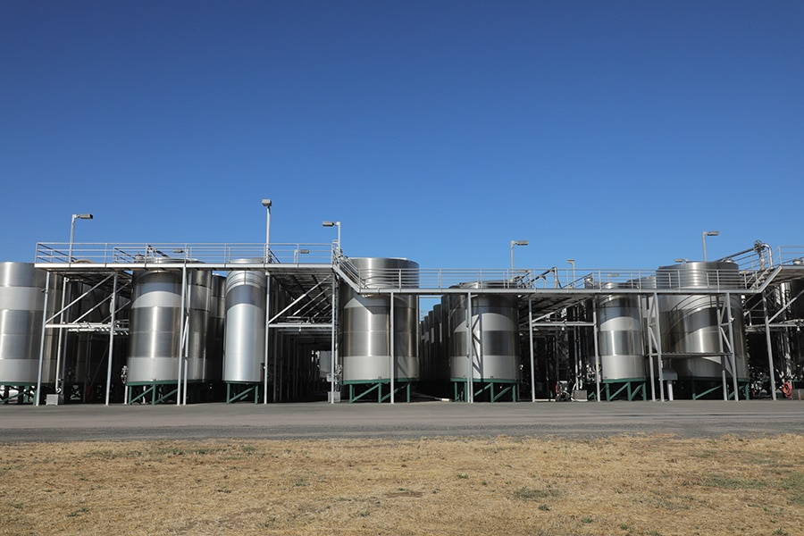
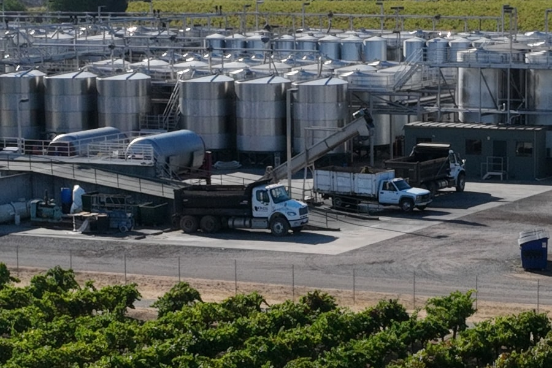

Built to keep fruit moving
Yokayo provides custom crushing for growers and wineries throughout California.
An on-site 72-foot certified scale makes receiving quick and documented. The Ukiah facility sits minutes from Highway 101. Twin Bucher XP 320 presses and a Bucher Delta E8 destemmer-crusher support processing of more than 500 tons of fruit per day.
Tanks
Tank capacity ranges from 1,000 to 30,000 gallons with red and white fermentation options. A multi-size breakdown system helps keep tanks topped during storage. All tanks have cooling jackets, and insulated tanks are available for long-term storage.
Scale
The state-certified drive-in and drive-out scale supports efficient shipping and transfer while giving growers documented measurements for shipments into the facility.
Press
The Bucher bladder press is designed for consistent must quality and accommodates white grape loads from 15 to 60 tons.

